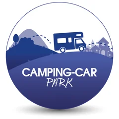
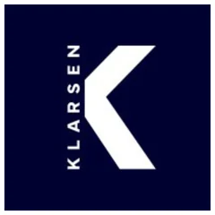
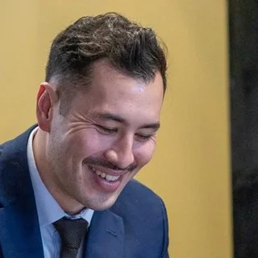

<Hello, I'm a Marketer/>
Maxime Girard - Page personnelle
Profile
Strategic marketing, technical execution.
Hybrid profile combining strategy / data / automation. I build marketing systems that drive measurable growth.
CMO vision + growth engineer execution. I code, I automate, I manage data, I structure teams.
Early-stage startup, hyper-growth scale-up, structured SMB: I've operated at every stage with measurable results each time. Scope: France, Europe, US and Japan.
Fighter
Determination to tackle challenges and push beyond limits. Fosters perseverance, boldness and initiative within teams.
Ambitious
Impact-driven vision. Inspires excellence and anticipates the future needs of clients and markets.
Approachable
Inclusive approach, simplicity and closeness with all stakeholders. Can communicate effectively with both technical and non-technical profiles.
Experience
10 years, 6 Exec. Committees,
5 markets.
Fév. 2026 — Aujourd'hui
Pollen AM
SME · Additive Manufacturing
Europe Marketing Lead C-Suite
- Déploiement complet d'une architecture GTM IA : pipeline RAG local (FastAPI + ChromaDB + Ollama), retrieval hybride BM25+RRF, reranking par cross-encoder, 6 modes experts métier, sans dépendance cloud
- Intégration du protocole MCP : orchestration d'agents IA connectant CRM, outils analytics (Semrush, GA4) et workflows n8n pour automatiser les cas d'usage GTM
- Architecture CRM orientée RevOps : pipeline à 8 étapes, scoring BANT/ICP, enrichissement, gouvernance Zoho Flow + webhooks n8n
- Coordination transverse Business / IT / Data en solo — périmètre Pologne, Allemagne, République tchèque
Depuis 2024
InRealArt
B2C/B2B Art Platform · Direct & indirect sales
Marketing Director & Partner
- Conception et déploiement d'un outil de pilotage de stratégie de contenu LinkedIn : prédit la performance d'un post avant publication et recommande le format générant le plus de prospects qualifiés — application déployée et utilisée en routine
- Gestion du catalogue de services data-driven pour les artistes, de la campagne d'acquisition et du scoring des leads sur une base CRM réactivée
- Développement de notebooks d'analyse pour les études marketing (comportement collectionneurs, performance des canaux, segmentation de la base)
- Déploiement d'un dispositif multi-comptes Google My Business pour le mailing direct et la génération de trafic D2C
Jan. 2025 – Nov. 2025

Camping Car Park
SME · Parking solutions
B2B Europe Marketing Director C-Suite
- Pilotage des opérations marketing européennes : Allemagne, Benelux, Espagne, Portugal, Autriche
- Définition et exécution de campagnes B2B ciblant 700+ collectivités locales — CRM, RP, lobbying
- Supervision de la conformité du site web B2B et de la génération de leads
- Responsabilité directe du budget marketing européen, arbitrages stratégiques, reporting au CMO et au CEO
2021 – 2024
Sense4data
SME · Consulting, Product & Data
B2B Marketing Director C-Suite
- Pilotage du marketing mix modeling interne et externe — clients PME & ETI (Eurofeu, Réseau CCI, Cegid)
- Définition de la stratégie de positionnement, messaging et offre commerciale
- Supervision de la génération de leads, du suivi commercial et de l'expérience client
- Management d'une équipe de 5 personnes
2020 – 2021
Eyelights
IoT & AR Scale-up · Toulouse
B2B2C Growth Director C-Suite
- Définition de la stratégie mix marketing, positionnement et messaging — grands comptes (Renault, BMW, Airbus)
- Gestion d'un budget d'acquisition de 1 M€, stratégie multi-canal
- Lancement commercial sur 5 marchés : France, USA, Allemagne, UK, Japon
- Conception et déploiement d'un chatbot interne pour automatiser les opérations marketing, produit et SAV
2019 – 2020

Groupe Actiplay
Marketing Agency · Bordeaux
B2B Traffic Director C-Suite
- Définition de la stratégie d'acquisition et supervision des campagnes clients (Fnac, Cdiscount, BMW)
- Développement et exploitation d'outils de collecte de données
- Structuration du réseau partenaires et commercial, management d'une équipe de 2 personnes
2016 – 2018
Facebots
Chatbot & AI Startup · Transport · Bordeaux
B2B Marketing Director C-Suite
- Développement de l'offre commerciale chatbots & AI Flows — grands comptes et secteur public (SNCF, métropoles)
- Arbitrage technologique et supervision des intégrations API, impact direct sur l'adoption commerciale et le revenu
2012 – 2015
Sopexa
Marketing Agency · Tokyo, Japan
Jr Account Manager B2B2C
- Développement commercial et marketing B2B2C sur le marché japonais, gestion de comptes internationaux (3 ans en environnement multiculturel)
- Accompagnement des grands comptes français et américains, développement d'outils de sales enablement, campagnes événementielles
Case Studies
Proven by
execution.
First Public Transit AI
In 2016, I connected Facebook Messenger to transit APIs across Bordeaux Métropole in 10 days. Trambots became the first AI dedicated to public transit in France — 100% organic growth through national press coverage.
International Growth & Crowdfunding
For the launch of EYERIDE at Eyelights, I drove the full growth and paid strategy across 4 markets simultaneously. Indiegogo campaign raised $984k in 30 days, generating +3M€ in revenue within 3 months.
Multi-Agent AI Marketing System
Autonomous marketing automation system deployed in production: Claude API orchestrator + Trello as task queue, 9 specialized agents (SEO, Content, Ads, Analytics, Social, Email, Brand, Strategy, Lead Research), automatic versioning on Git.
Skills
Strategic &
technical stack.
Go-to-market & Sales Strategy
Positioning, messaging, product launch, offer structuring, partnerships, B2B and B2B2C markets — from seed stage to LBO
Acquisition & Growth
SEO / SEA, lead generation, CRM (HubSpot, Pipedrive, Zoho, Klaviyo), multi-channel campaigns, LinkedIn Ads, Meta, Google Ads, TikTok
Data & Analytics
GA4, Looker Studio, Metabase, advanced tracking (GTM, Umami.js, Hotjar, Clarity), Excel VBA, Google Sheets AppScript, Python (Pandas, NumPy)
Automation & Generative AI
Make, n8n, Zapier, Claude API, ChatGPT, Gemini, Cursor — autonomous workflow design, LLM agents, MCP integrations
Web Development
Python, JavaScript / TypeScript, REST API, Google Cloud Platform, WordPress, Firebase, GitHub, Jupyter — autonomous from spec to deployment
References
What my
peers say.
Il est constamment en train d'innover et de rechercher les innovations qui lui permettront d'aller plus loin. C'est un profil ultra intéressant pour contribuer à faire grossir une entreprise.
On the technical side, Maxime is extremely skilled. He masters Python and JavaScript, and his scraping and automation capabilities are remarkable for a marketing director.
Toujours plusieurs coups d'avance, c'est ça qu'on aime chez lui ! Son analyse est très pointue sur des sujets concernant le marketing, le management et la growth pure.

Il connaît très bien son marché, son positionnement et les enjeux technologiques et commerciaux de ses clients. Il est passionné par son métier, extrêmement curieux — cela facilite grandement les échanges.
Available for
a conversation.
B2B Marketing & Growth Director · Bordeaux · France
Book a time slot